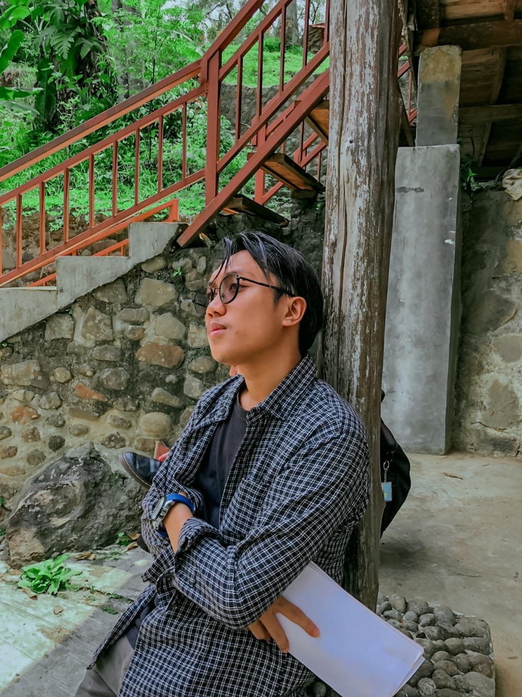

 Hallo semua, Perkenalkan nama saya Muhamad Faisal AKbar saya merupakan seorang anak yang lahir ditahun 2004 dan bertempat tinggal di desa Cimande Hilir Caringin Bogor Tapi saat ini saya sedang berada di perantauan tepatnya di ibu kota yaitu Jakarta. Saya berada disini bukan tanpa maksud karena saya sedang berjuang untuk memperbaiki hidup saya dengan berkuliah di STT Terpadu Nurul Fikri karena Saya memiliki tekat bahwa, jika saya tidak terlahir dari keluarga kaya maka keluarga kaya itu akan terlahir dari saya
tapi mari kita tetap memanjatkan Puji syukur kita terhadap kehadirat Allah SWT yang telah memberikan kita begitu banyak Rahmatnya dan tak lupa Sholawat serta salam nselalu kita panjatkan kepada junjungan kita Muhammad SAW. yang berlafadkan Allahumma shalli alaa Muhammadin 'abdika warosulika nabiyyil ummi wa'alaa aalihii wa sallim
Saya menyadari bahwa saya sering menghindari tantangan. Ke depan, saya akan berusaha untuk menghadapi ketakutan saya dan melihatnya sebagai kesempatan untuk belajar dan setelah merenungkan pencapaian saya, saya ingin menetapkan tujuan yang lebih spesifik dan terukur agar saya bisa lebih fokus dan termotivasi. Saya menyadari pentingnya manajemen waktu yang baik. Saya akan membuat jadwal harian untuk mengatur waktu belajar dan bersosialisasi agar lebih seimbang dalam memperbaiki pelajaran Saya ingin lebih terbuka terhadap umpan balik dari dosen dan teman sejawat. Dengan mendengarkan masukan mereka, saya bisa memperbaiki diri dan meningkatkan kualitas pekerjaan saya." Setiap kegagalan yang saya alami adalah pelajaran berharga. Saya akan berusaha untuk tidak mengulangi kesalahan yang sama dan belajar dari pengalaman tersebut." Saya menyadari pentingnya membangun jaringan. Ke depan, saya akan aktif berpartisipasi dalam kegiatan kampus dan berkenalan dengan lebih banyak orang." Saya menyadari bahwa kesehatan mental saya sangat berpengaruh pada produktivitas. Saya akan mengambil waktu untuk beristirahat dan melakukan aktivitas yang saya nikmati."
Selamat mengunjungi web yang sangat sederhana ini, Selamat mengunjungi, kritik dan saran yang membangun sangat diharapkan demi lebih baiknya lagi tampilan web ini.